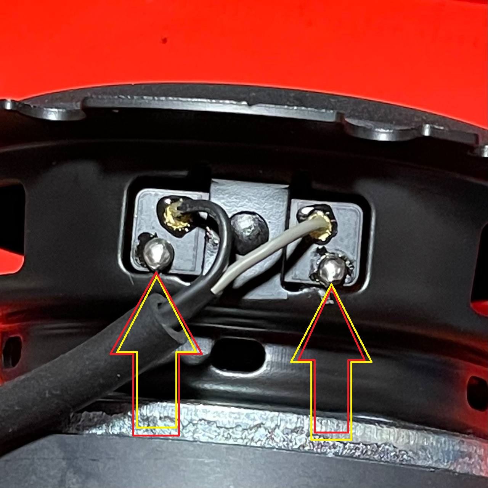
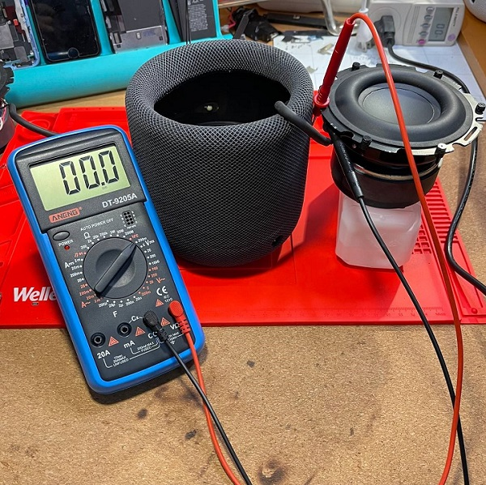
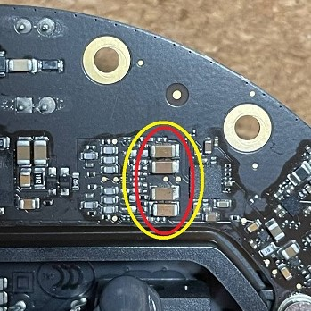
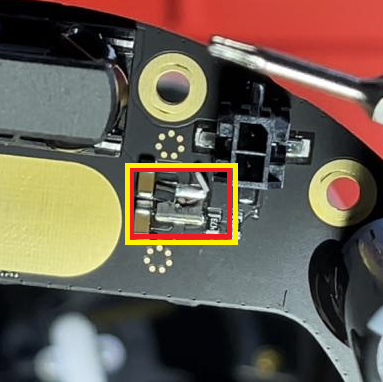
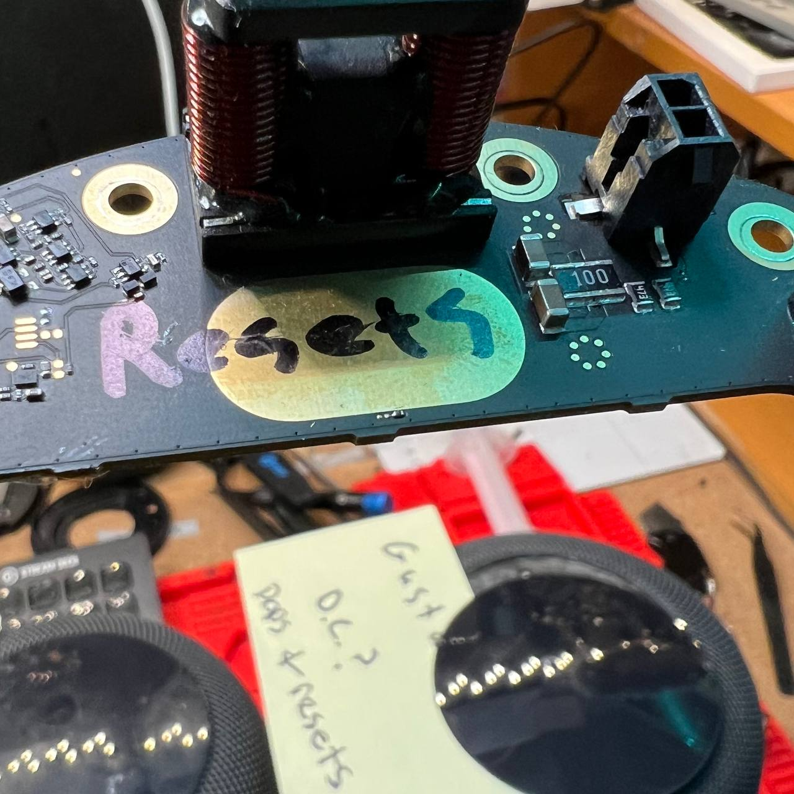
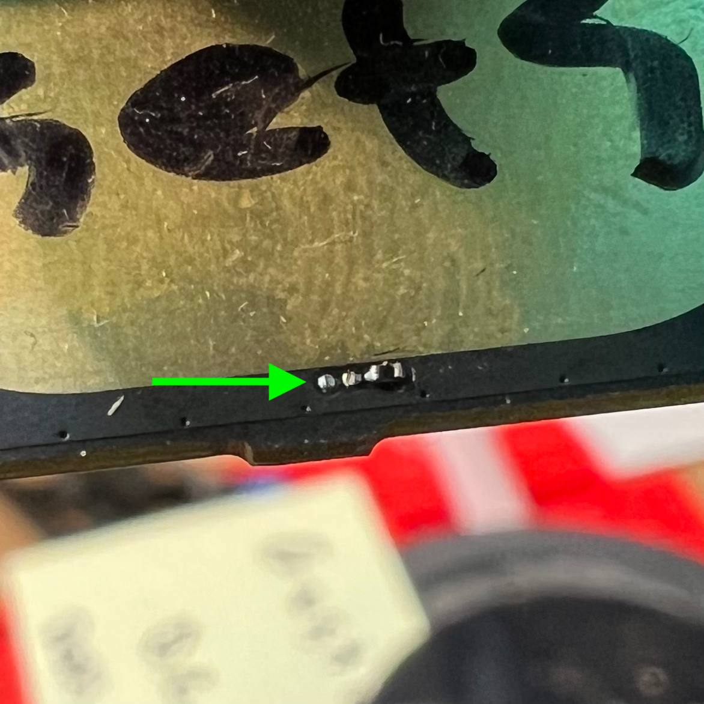

Death Farts - DC Offset (Failing DC Filter Capacitors)
Symptoms: Very loud popping, lack of bass, and / or a loud buzzing sound followed by a restart, AKA "Death Farts". See below for sound samples to compare. Not to be confused with software / wifi issues where music crackles and becomes delayed.
Diagnosis: 1: Remove the subwoofer and place it to the side, carefully reconnect everything and power on the HomePod.
2: With the HomePod powered on, not in standby but not playing anything, and subwoofer connected, measure the DC voltage with a multimeter from the subwoofer speaker terminals. You can probe with the pads under where the subwoofer cable goes into the subwoofer, see Figure 1 below.
TIP: Polarity does not matter when measuring DC offset, you are simply looking for how far from 0mV you are. The warmer these capacitors get when they have failed, the worse they filter DC voltage, so be sure to measure for at least a few seconds and watch for any significant growth in DC offset beyond tolerance.
The amp IC's input is rated for up to +/-18mV DC, which means up to +/-200mV DC can be seen at the subwoofer. More than this is what triggers the amp to "Death Fart", can cause damage to components, and should warrant replacing the DC filters, so we recommend a more aggressive 50mV maximum tolerance seen at the subwoofer.
Repair: There are four capacitors that filter this DC in the audio signal before it's amplified and sent to the speaker. They are located on the amplifier board, between the DAC and AMP chips. If you measured a significant amount of DC, you need to replace them with new capacitors of 10uF, size 1206, X7R, 5-10%, rated for 35v or better. I have been using CL31B106KBHNNNE rated for 50v. Only use quality replacement capacitors from reputable brands / resellers. I have a repair video replacing these capacitors on YouTube.
There is a big black resistor on the amp next to the subwoofer connector you should also inspect...on occasion I have found these to be damaged when there are Death Farts. It is a 10Ohm, 1Watt, 1% Tolerance, 200V rated, 1218 size resistor, and can be replaced with part number RCL121810R0FKEK. It's resistance can be measured while still installed on the board to confirm.
You will also want to inspect your subwoofer speaker for damage to the voice coil from too much DC, see the next Common Issue below for more detail on that.
Root Cause: MLCC capacitors naturally decay over time and lose their effectiveness at filtering DC voltage, and this is exacerbated the warmer they are. High quality capacitors used properly should last many years, but eventually all will still need reconditioned or replaced again. I can only speculate the ones used in HomePods have QA issues and / or the amp doesn't have a great design to account for primary filter failure.
The amplifier inside the HomePod turns itself off after ~10 minutes of inactivity. Any activity or percieved "Hey Siri" trigger will turn the amp back on. During the change in power, there may be a popping sound. This popping sound comes from DC voltage changes being heard in the speaker. It's fine and normal for a small temporary DC spike when the amp turns on or off, resulting in a pop. It's also hard to tell the difference between that and a pop that comes from a dangerous constant DC offset that is growing over time. It's usually OK to ignore any popping issues if that's all it does. Typically HomePods will Death Fart to indicate it's enough of a problem, at which point you can and should pursue repairs.
How Did I Figure This Out? At first, it was believed that death farts were caused by a failing amplifier IC that powers the subwoofer's audio signal. It was also believed that this amp IC was propietary and irreplacable. Eventually, I found the family of ICs it was based on, along with suitable replacements and even OEM replacements. This didn't fix the issue! Researching DC Offset more, I learned that most class D audio amplifiers have DC Offset and it must be filtered somehow, usually with ceramic capacitors. The more progressed their failure, the worse they are at filtering DC Offset the hotter they are too! This was my lucky break. All I had to do was pointmy heat gun at various areas of the amp until I saw a sudden spike in my DC Offset readings, and voila, filters found! With the first-half of the battle won, the next is figuring out what to replace them with. Since these are filtering DC voltage down to less than a couple mV, it's critical to pick the right replacements and not just match the capacitance. I once again got very lucky, when researching any products that used the same family of amp IC for schematics, the manufacturer themselves have an evaluation amp board with schematics published! Boom. 10uF, rated X7R, 10% tolerance, but only 16 volts?? That seemed wrong. For the voltage, I see at least 20-22v across these caps while installed and operating on the amp, so perhaps this may be contributing to premature failure. This is why I decided to use 50v replacements.
I have a livestream of a repair where it needed all new capacitors, resistor, and subwoofer here.

Subwoofer Probe Points

Testing for DC Offset

Capacitors Location On Amp Board
Capacitors (x4): 10uF, size 1206, X7R, 5-10%, rated for 35v or better
Example, Part # CL31B106KBHNNNE

Blown Resistor on Amp Board
Resistor: 10Ohm, 1Watt, 1% Tolerance, 200V rated, size 1218
Loud Pop & Restart - Blown / Missing Resistor
Symptoms: Powers up and briefly stays on fine, but then makes a loud POP and restarts. Not the same as death farts...
Diagnosis: Inspect amp near cooling pad for damaged / missing resistor
Repair: Either resistor can be replaced with a 10k Ohm resistor (thank you Omanyd#1538) size SMD 0201 (thank you myxomatosis
#1766).
Root Cause: Seems like another QA issue?

Where they at

MISSING